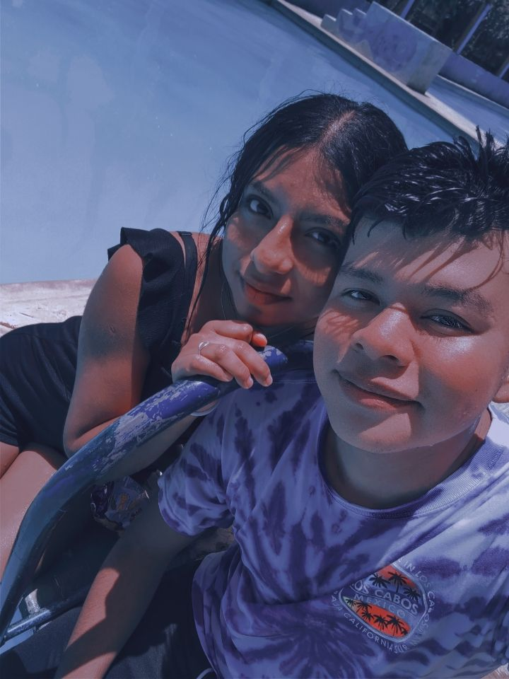
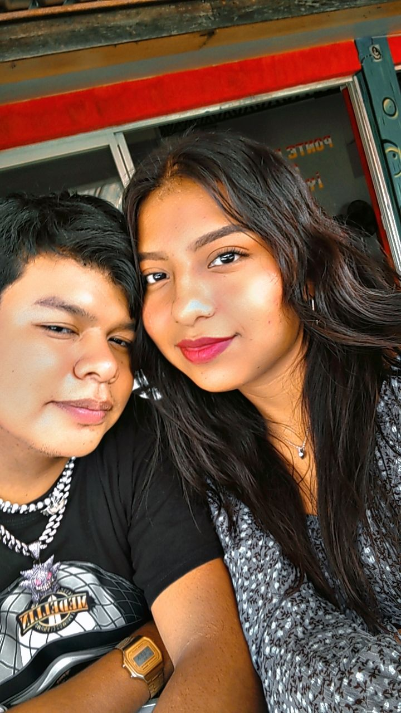
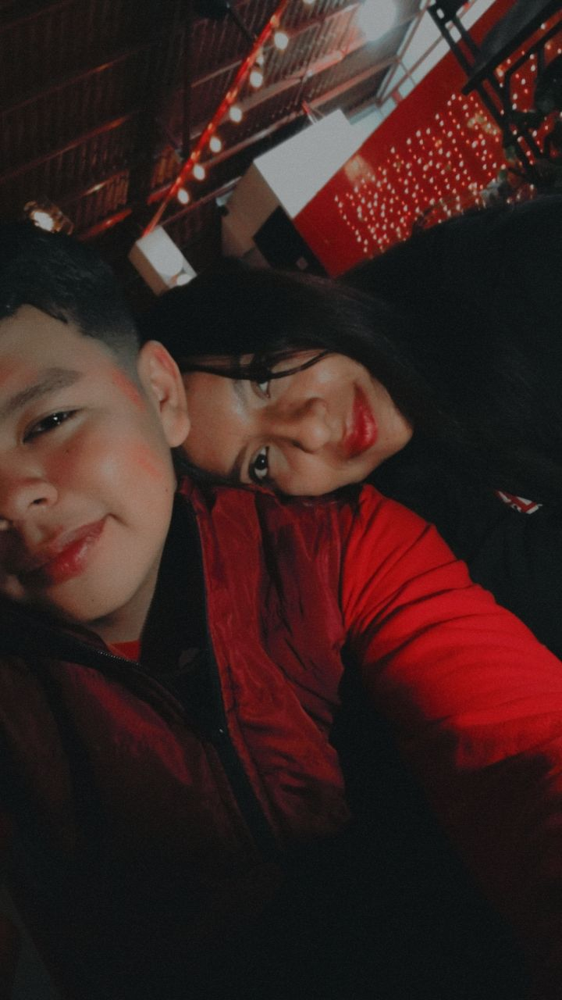
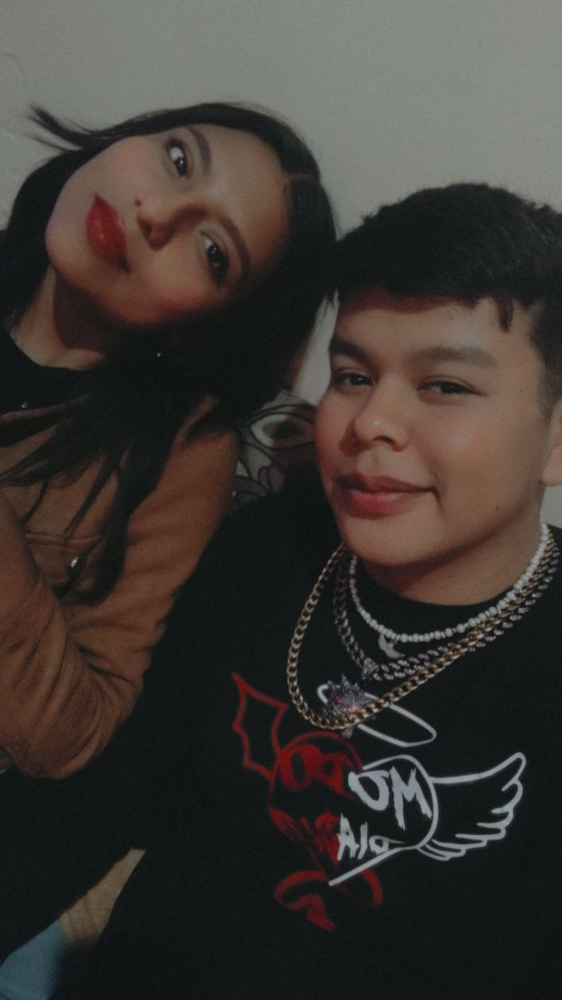

Recuerdo el momento exacto en que te vi por primera vez. Todo parecía normal hasta que apareciste tú, y en un solo instante mi mundo cambió.
No sé si fue tu sonrisa, tu mirada o la energía tan linda que desprendías, pero desde ese día sentí algo que nunca había sentido. Fue como si el destino me susurrara que acababa de conocer a alguien que marcaría mi vida para siempre.
Desde ese primer encuentro, cada conversación, cada momento, cada mirada compartida se fue convirtiendo en una historia que no quiero dejar atrás.
Lo nuestro no fue casualidad. Fue una de esas conexiones que simplemente pasan, y cuando pasan, no se pueden ignorar.
Por eso, no quiero perder lo que empezamos, porque sé que lo que tenemos es real y vale la pena luchar por ello.

Porque Me Enamoré De Lo Que Eres
Me enamoré de ti sin planearlo, sin buscarlo, sin pensarlo. Simplemente pasó.
Me enamoré de tu forma de ser, de tu risa contagiosa, de tu dulzura y de tu fuerza. De cómo, con solo una palabra tuya, todo mi día podía cambiar.
Me enamoré de la manera en que me hacías sentir importante, querido, y capaz de todo solo con tenerte a mi lado.
Amo cómo te entregas con el corazón, cómo enfrentas la vida con valentía y cómo incluso en los momentos difíciles sigues teniendo esa luz que tanto admiro.
Y aunque hayamos pasado por momentos duros, no quiero que eso opaque lo bonito que somos juntos.
Las dificultades son solo pruebas que demuestran cuánto estamos dispuestos a luchar por lo que amamos, y yo estoy dispuesto a todo por ti.
Porque tú eres mi razón, mi inspiración y la persona que más quiero cuidar y amar.

Porque Vivimos Momentos Que No Quiero Olvidar
Nuestra primera salida juntos fue uno de esos días que se quedan grabados para siempre.
No fue el lugar, ni las cosas que hicimos, fue simplemente estar contigo. Verte reír, caminar a tu lado, sentir que todo fluía con naturalidad.
Desde ese día entendí que contigo los momentos más simples se convierten en recuerdos hermosos.
Cada salida, cada conversación, cada risa compartida construyeron una historia que no quiero borrar ni olvidar.
Porque esos recuerdos no solo me hacen feliz, sino que me recuerdan todo lo que podemos volver a tener si ambos creemos en nosotros.
No quiero que lo nuestro se quede en el pasado. Quiero seguir construyendo nuevos recuerdos, tomarte de la mano y mirar hacia adelante sin miedo, sabiendo que el amor siempre puede más que cualquier problema.

Porque Nuestra Historia Merece Continuar
El 3 de agosto de 2023 fue mucho más que una fecha: fue el inicio de algo que transformó mi vida.
Ese día dijimos “sí”, y en ese sí había promesas, sueños y un amor sincero.
A veces la vida nos pone pruebas, y no siempre las cosas salen como imaginamos. Pero eso no significa que el amor se haya ido, solo que debemos recordarlo, cuidarlo y volver a hacerlo crecer.
Yo no quiero rendirme, porque sé lo que vales y sé lo que valemos juntos.
Hemos pasado momentos hermosos, y también difíciles, pero el amor no se mide por los tropiezos, sino por la fuerza que tenemos para levantarnos.
Quiero seguir escribiendo esta historia contigo, sin borrar nada, solo añadiendo capítulos más fuertes, más reales y más llenos de amor.

Porque Creo En Un Futuro Contigo
No quiero imaginar un futuro donde no estés.
Quiero imaginar uno donde superamos juntos cada obstáculo, donde reímos de los errores y aprendemos de ellos.
Donde no importa cuántas veces tropecemos, porque siempre elegimos levantarnos de la mano.
Quiero seguir soñando contigo, seguir planeando cosas, seguir creyendo en que lo nuestro puede renacer más fuerte que nunca.
Porque te amo con el alma, con todo lo que soy, y aunque las cosas no siempre sean fáciles, sé que el amor verdadero siempre encuentra el camino.
Si me das la oportunidad, prometo cuidar de ti, de nosotros, y de todo lo que algún día prometimos construir juntos.
Te amo, y no quiero rendirme.